Si no , ahí están las silvas de varia lección o aquellas tentativas a las que Montaigne llamó sencillamente - ensayos -.

También ahora estas páginas son el hombre y de él tenemos no poco que decir.
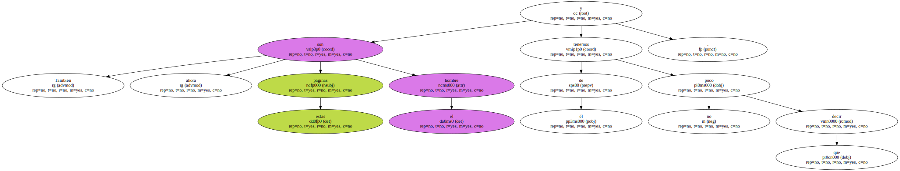Germán de Granda se dedica a unas tareas difíciles , lo que sirve para retratar su conducta ; lo hace con un rigor implacable , lo que facilita muchas agujas para marear y nos da unas informaciones bibliográficas que abren mil caminos.
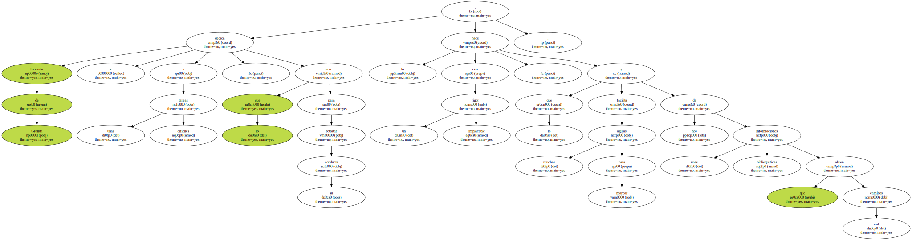Abrumado el lector , se pregunta ¿ cómo ha podido hacerse todo esto en cinco años.
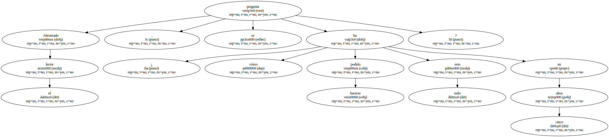Y las clases , y los alumnos , y los viajes.
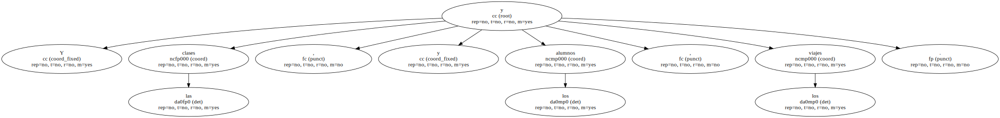Vale la anécdota de Ramón y Cajal : - Cuando un español sale con ganas de trabajar , que le echen alemanes de ésos -.
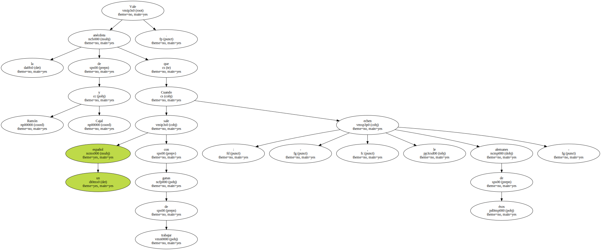Germán de Granda nos entrega un libro en el que , a partir de precisiones sobre el concepto de - español atlántico - nos va dando interferencias lingüísticas de blancos , negros y cobrizos ; de las peculiaridades dialectales de alguna parcela del español americano ( coherencias con el postulado anterior ) o del encuentro del español con lenguas africanas ( lo que también es coherente ).
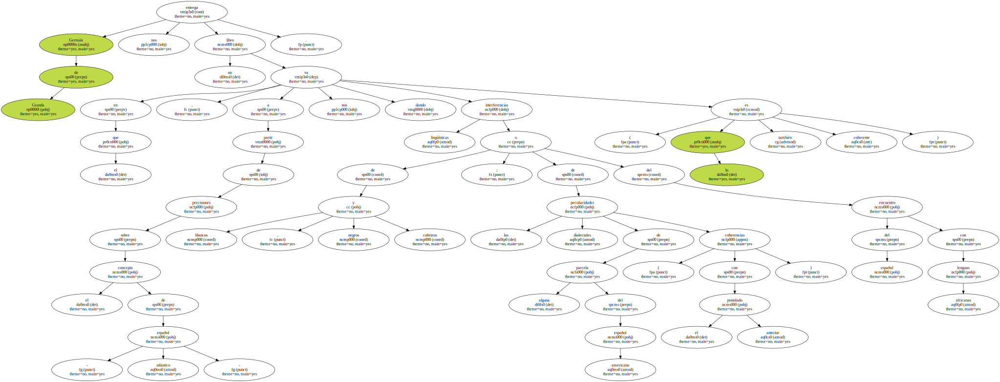Podemos enfrentarnos con todas estas realidades , darles la relación que del índice se desprende y comentar ( o discutir , si al caso viene ) lo que el autor nos ofrece.
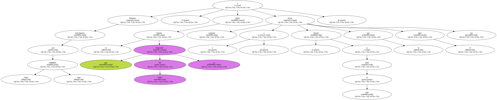En investigación todo punto de partida debe estar presidido por el deslinde de los campos.
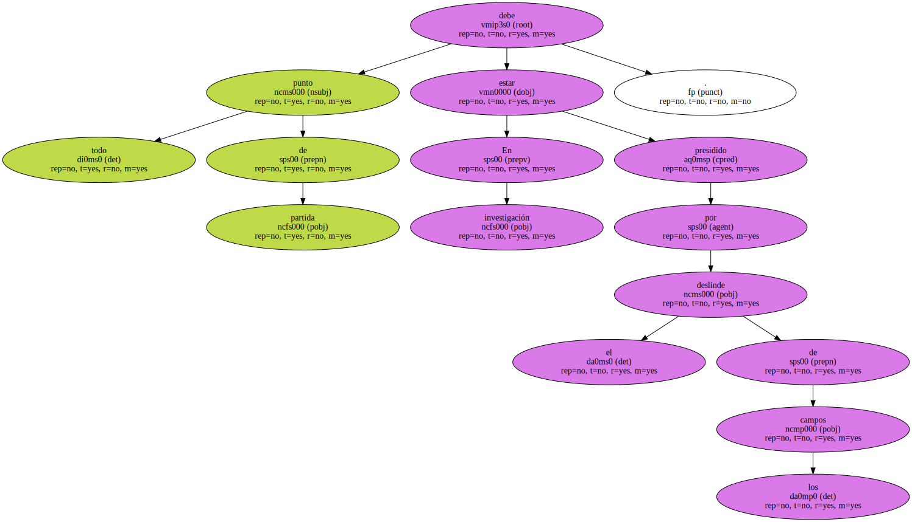Si no hay una conceptualización precisa , sembraremos confusión.
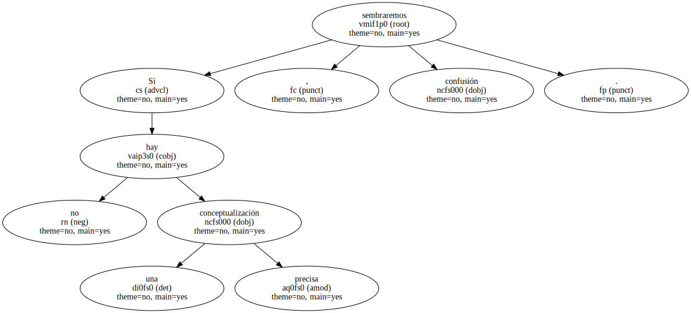Por eso , al excesivo entusiasmo que produjo lo que se llamó - español atlántico - , Germán de Granda pone no pocos puntos sobre las es para atemperar juicios y moderar afirmaciones , pero no caigamos en negaciones excesivas.
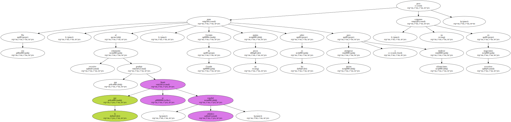Hablar del español de América como un subdialecto del andaluz no deja de ser excesivo , por más que haya muchísimos rasgos andaluces en el español de América , cuya presencia cada vez se siente más amplia , pero habrá que pensar que si las innovaciones salen de una base andaluza , la historia deberá explicarnos la evolución a partir de ellas.
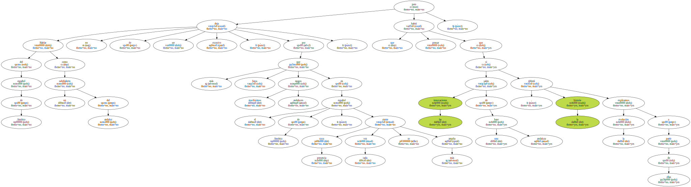